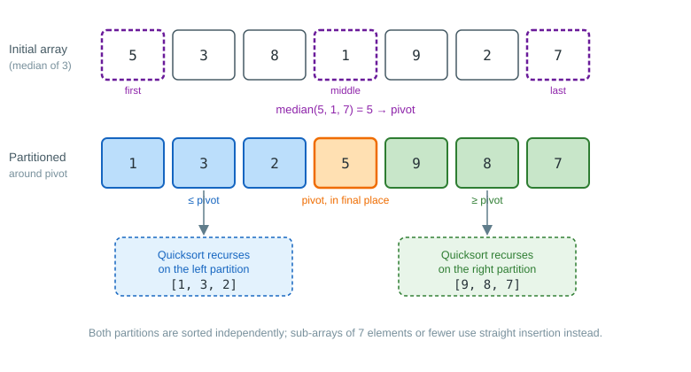

Quicksort
| This documentation was generated with the assistance of AI. Please report any inaccuracies. |
QuicksortSorter sorts an array using Quicksort, a "partition-exchange" method that is, on most
machines and on average, the fastest known general-purpose sorting algorithm. A partitioning
element is selected from the array; pairwise exchanges of elements then split the array into two
sub-arrays so that every element to the left of the partitioning element is smaller and every
element to the right is greater. The process is then repeated independently on each sub-array.
The partitioning element is chosen as the median of the first, middle and last elements of the
current sub-array, which avoids Quicksort’s worst-case O(N2) behavior on arrays that are already
sorted or nearly sorted. To keep the inner loop tight, the algorithm is implemented iteratively
with an explicit stack of pending sub-arrays instead of recursion, and sub-arrays smaller than 7
elements are finished off with straight insertion rather than
being partitioned further. The stack has a fixed capacity; a SortingException is thrown in the
extremely unlikely case that it overflows.
QuicksortSorter is not stable: elements that compare as equal may be reordered relative to each
other.
Example
The diagram below partitions the array {5, 3, 8, 1, 9, 2, 7}. The pivot is the median of the
first, middle and last elements; after partitioning it sits in its final sorted position, with every
smaller element to its left and every larger element to its right. Quicksort then recurses into
both partitions independently.

Usage
import com.irurueta.sorting.QuicksortSorter;
import com.irurueta.sorting.SortingException;
QuicksortSorter<Double> sorter = new QuicksortSorter<>();
double[] values = {5.0, 3.0, 8.0, 1.0, 9.0};
try {
sorter.sort(values);
} catch (final SortingException e) {
// handle the extremely unlikely internal stack overflow
}It can also be selected dynamically through the Sorter factory:
import com.irurueta.sorting.Sorter;
import com.irurueta.sorting.SortingMethod;
Sorter<Double> sorter = Sorter.create(SortingMethod.QUICKSORT_SORTING_METHOD);Like every Sorter, it also supports sortWithIndices, select and median, as described in
Usage.
System sort
SystemSorter extends QuicksortSorter but delegates every sort overload to java.util.Arrays,
relying on the sorting algorithms bundled with the Java SDK instead of the routines described
above. It is the implementation behind SortingMethod.SYSTEM_SORTING_METHOD, the
Sorter.DEFAULT_SORTING_METHOD. Because java.util.Arrays offers no way to retrieve the
permutation it applies, SystemSorter does not override sortWithIndices; calling it falls back
to `QuicksortSorter’s own implementation.
import com.irurueta.sorting.SystemSorter;
SystemSorter<Double> sorter = new SystemSorter<>();
double[] values = {5.0, 3.0, 8.0, 1.0, 9.0};
sorter.sort(values); // delegates to java.util.Arrays.sortReference
QuicksortSorter is based on the algorithm described in Numerical Recipes,
3rd Edition, section 8.2, "Quicksort".